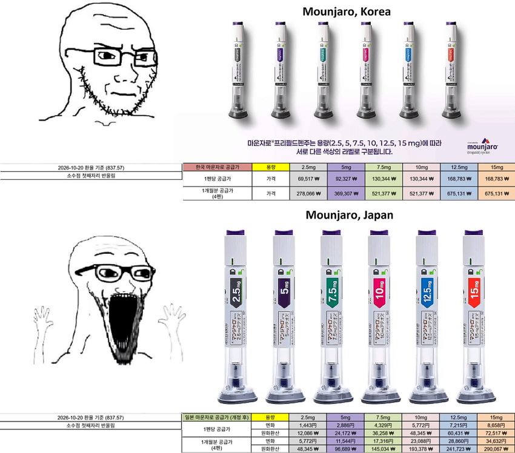
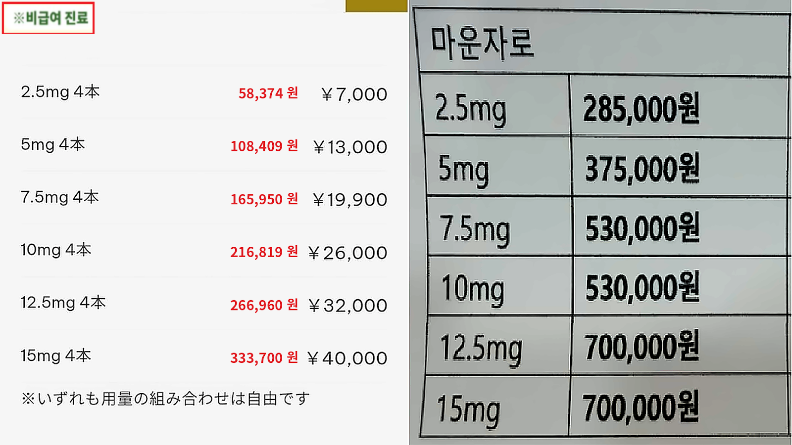
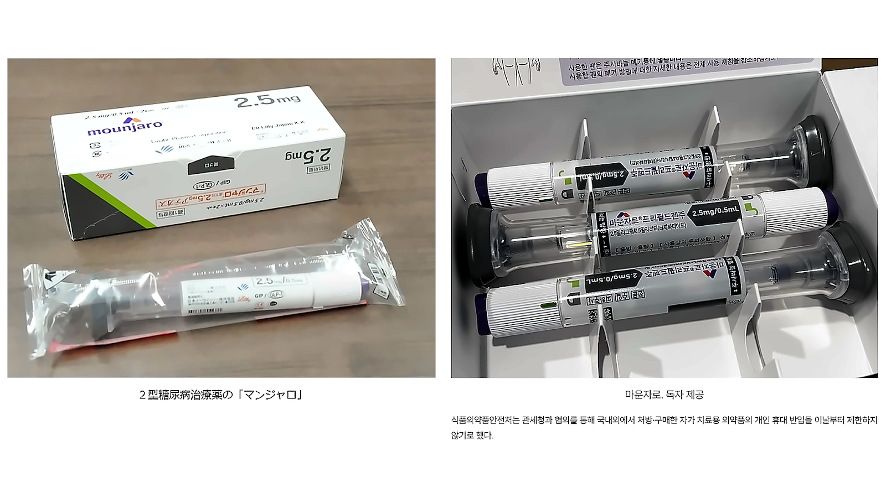

한국,일본의 마운자로는 제품 라벨 언어만 한국어냐 일본어냐의 차이인데
2.5 기준 한국 1/5 수준의 공급가

공급가에 기반한 한국보다 압도적으로 저렴한 성지 실처방가

한국과 다르게 펜마다 개별 멸균 비닐포장까지..
일본 마운자로 차원이 달라 <- 사실이었음...

한국,일본의 마운자로는 제품 라벨 언어만 한국어냐 일본어냐의 차이인데
2.5 기준 한국 1/5 수준의 공급가

공급가에 기반한 한국보다 압도적으로 저렴한 성지 실처방가

한국과 다르게 펜마다 개별 멸균 비닐포장까지..
일본 마운자로 차원이 달라 <- 사실이었음...
조만간 신문기사들 또 뜨겠네
[단독] 다이어트 주사 사러 일본까지… 외화유출 심화에 칼 빼든 OO계, 관련법 개정 나서
[경제] 일본의 사그러들지 않은 침략야욕, 이젠 당신의 지갑을 노린다
[사회] "여행가는 기분으로 마운자로 사러가요" 2030세대의 달라진 가치관.. 그들의 웃음 뒤에 국가는 울었다
[종합] "스시자로 게 섯거라" K-마운자로 에페, 공급가 파격 인하… 대반격 시작되나
[오피니언] 물산장려운동엔 과거-현재 구분없어… 범국민적 동참 필요
맘에드는거 하나 골라보셔
와 현직 기자임?ㄷㄷㄷ
와 씨발 제목만 봐도 토나온다 ㅋㅋ
와 이거 보니 빨리 갔다 와야겠다.
진짜 차원 다르네 ㅋㅋㅋㅋㅋ
일본 가는거 매국노 취급하겠네
엔저+한국보다 싼 가격 = 일본가서 스시 배터지게 먹고 사와도 돈남음
+ 마운자로 꽂는 사람은 천엔이면 스시 배터지게 먹을 수 있음
꽂기전에 최후의만찬으로 먹어야지 일본까지가서 천엔어치 먹기 너무 아까운뎅 ㅋㅋ
그럼 11배 12배 만큼 ㄱ
많이 먹는다고 해봐야 11~12배..
아앗 존나 많이 먹는다아아아앗!!!
제약사가 로비를 얼마나 쳐했으면 저꼴이지 가격이 ㅋㅋ
ㄹㅇ 차원달라네.. 일뽕들아 미안하다!!! 차원이 다른걸 이제 인정한다!!
근데 마운자로 우리나라 특허 언제 끝나냐?
위고비가 28년 6월인가 7월임
스시자로는 신이야!
이건 진짜 차원이 다른게 맞네
뭐 때문에 저렇게까지 차이가 나는거지?
일본은 마운자로 급여화되어있고, 급여 협상 시 제약사랑 '급여화 하면 많이 팔린다. 그러니까 공급단가 낮춰라'하고 협상했다고 들음.
우리나라는 협상중이긴 한데, 이미 부분적 급여화 된 오젬픽(위고비랑 같은거) 사례를 보면, 급여기준을 되게 빡빡하게 잡아놨음. 당뇨병 환자중에 도저히 기존약으로 혈당이 안잡히는 사람만 한시적으로 쓰는 방향으로. 그러니까 아직 비만 관련 급여화가 우리나라에는 없는거지.
나라에서 BMI 기준으로도 급여해주는 방향으로 하면서 단가 낮추라고 제약사에 요청하면 우리도 싸질수는 있는데...
넘어야할 허들이 좀 많네...
설명 고마워
그나마 희망적으로 생각해볼만한 방향은 복제약이 풀리는 경우인데 그나마도 위고비는 28년이지만 마운자로는 36년이라네..
ㄹㅇ 왜 이렇게 차이나는거야 ㅋㅋㅋ
3개월분 구매가능한거니까 갖고왔을때 비행기값은 뽕뽑고남을듯ㅋㅋㅋㅋㅋㅋㅋㅋㅋㅋㅋ
에페 vs 마운자로
일본 차원이 달라
Mounjaro, South Korea
와!!!!!!
-> 하게해줭
근데 태그에다가도 마운자로 일본 넣어놨네 미친 ㅋㅋㅋㅋㅋㅋㅋㅋㅋㅋㅋ
3개월분이라는게
비행기 타고 들어올때마다 3개월분씩 들고 들어올 수 있나?
그런셈이지
대마도가 반짝
외화 유출 막고싶으면 국내도 마운자로 가격내려라.
와..
냉장 오또케 유지함?
잠시는괜찮지
위고비는 30도 이하애서 2주는 괜찮다는거 보면
비슷할듯
마운자로 설명서 읽어보면 살온에서 21일간 보관가능하다고 적혀잇음
원종이 이 미친놈들 이좋을걸 지들만!!!!
근데 ㄹㅇ 어차피.국내 마운자로 맞을 사람이였으면
비수기에 일본 가서 한달치 사고 한 20더 보태서 2~3일 놀다오는것도 되네 ㅋㅋㅋ
최저가 요즘 일본 가장 가까운 도시 얼마정도 하냐 왕복
일본 10ml 얼마임
진짜 차원이 다르네
중식자로가 씬건 더 싼데 펜형이라 호불호 갈릴듯
펜형 장점 : 골든도즈(주사기 내 약물 잔량이 1회분정도 더 들어있음), 나눠맞기 가능함
근데 주사 싸게 사는 것만 목적이다 하는 사람 외엔 일본이 나을듯 ㅋㅋ
이건 치원이 달라 인정이지ㅋㅋ
애국할 가치가 없음
sns, 커뮤가 발달해서 눈가리고 아웅하는게 언제까지 먹힐꺼라고 생각하냐
아직도 위에 앉아 군림하는 틀딱들은 진짜 국민을 개돼지로 보네
카레자로는 짭이 존나게 많데